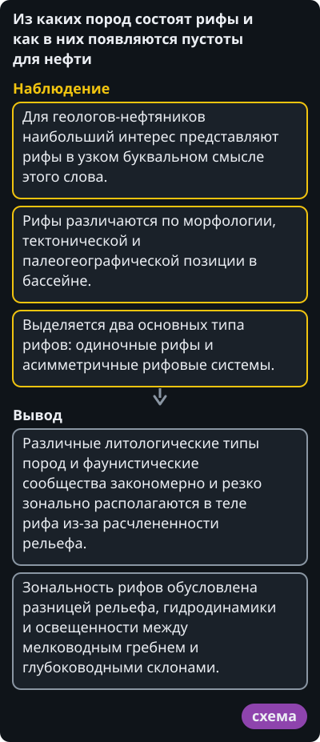
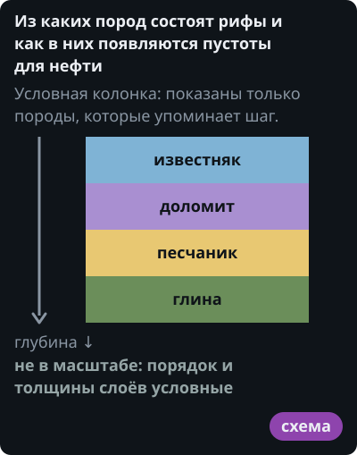

Шаг 2 из 4 · ≈ 16 мин · стр. 201–205 · ключевое понятие
Из каких пород состоят рифы и как в них появляются пустоты для нефти
Литология и коллекторские свойства пород, слагающих рифы
Опирается на Что такое рифы, почему в них много нефти и чем они отличаются
Прогресс шага: 0 из 2
из книги (слова автора) пересказ ИИ гипотеза
Пересказ проверен по странице книги — нажмите «стр. N».
Сначала угадай
«Пористость рифовых известняков сохраняется неизменной с момента образования и не подвергается изменениям.» пересказ
Как думаешь: это верно?
СовпалоНе совпало: на самом деле это верно.на самом деле это неверно.
Первичная пористость рифов в чистом виде не сохраняется и сильно сокращается в процессе их роста, а затем преобразуется вторичными процессами.
Понять
Суть
Рифы сложены биогермные известняки (породы, образованные остатками нарастающих организмов) и обломочными породами. Их емкость формируется за счет вторичных процессов выщелачивания и доломитизации. пересказ
Зачем этот шаг
Текст опирается на понятие рифа и раскрывает его внутреннее строение, типы пород, а также первичную и вторичную пористость. пересказ
Как это работает
Рельеф рифа создает резкие перепады глубин, освещенности и гидродинамики. Это определяет литолого-фациальную зональность. Первичные пустоты скелетов частично цементируются. Вторичные процессы формируют каверновую и межкристаллическую пористость. пересказ
Иллюстрации


Интерактив схема
Литолого-фациальные зоны и типы пород рифа
Нажми на часть схемы, чтобы узнать её особенности и состав. пересказ
Выбери часть схемы: клик, Enter или пробел.
Схема собрана из утверждений узла, а не из измерений: у каждой части есть страница книги.
В данных
Что это значит для данных
В данных по рифовым резервуарам фиксируются резкие изменения литологии и емкостных свойств на коротких расстояниях из-за зональности и развития каверн. пересказ
Стандартные модели межзерновой пористости терригенных пород не работают для карбонатных рифов из-за сложной каверновой и трещинно-пустотной структуры. пересказ
Модель машинного обучения, прогнозирующая проницаемость только по общей пористости, выдаст ошибку на рифовых интервалах с крупными кавернами и карстовыми пещерами. гипотеза
Аналогия
Рифовый резервуар похож на сложную нереляционную базу данных с динамической структурой связей. Данные в ней распределены неравномерно по зонам кластера. пересказ
Физические процессы растворения и карстообразования создают пустоты с экстремальной проницаемостью, которую нельзя описать простыми вероятностными распределениями. пересказ
Как делает специалист
При интерпретации данных учитывают резкую литологическую зональность и высокую вариативность типов пород от ядра к склонам. Крупные каверны способны обеспечивать аномальные дебиты скважин. пересказ
Частая ошибка
Пористость рифовых известняков не сохраняется неизменной с момента образования. Она сильно сокращается в процессе роста из-за цементации, а затем преобразуется вторичными процессами. пересказ
Проверить себя
Задания
Задание 1 понимание
Что происходит с первичной пористостью рифов в процессе их роста?
Правильный ответ: Она сильно сокращается из-за цементации и выпадения карбонатов
Первичная пористость рифов сокращается в процессе их роста за счет цементации и выпадения карбонатов.
Задание 2 перенос
Какие типы пород и пустотное пространство характерны для рифовых комплексов?
Правильный ответ: Известняковые брекчии и конгломераты на склонах; Вторичная каверновая пустотность от выщелачивания; Биогермные известняки в ядре рифа
Рифы состоят из биогермных известняков, обломочных пород на склонах и обладают вторичной каверновой пористостью.
Задание 3 на данных
Уникальный дебит скважины 4 Серро-Асуль в Мексике (42000 м³/сут) обусловлен тем, что она вскрыла карстовую в мелом рифе, где вместе с нефтью выносились обломки .
Правильный ответ: пещеру, сталактитов
Скважина вскрыла карстовую пещеру, из которой выносились обломки сталактитов.
Задание 4 узнавание
Расположите фациальные зоны линейно вытянутой рифовой системы в правильном порядке от глубоководной части к тыловой:
- тыльно-рифовые фации
- предрифовые фации
- зарифовые лагунные или мелководно-морские фации
- фации ядра рифа
- депрессионные бассейновые фации
Правильный ответ: депрессионные бассейновые фации → предрифовые фации → фации ядра рифа → тыльно-рифовые фации → зарифовые лагунные или мелководно-морские фации
Профиль рифовой системы последовательно сменяется от депрессий и предрифовых зон к ядру и лагунам.
Чек-лист шага
Глубже
Нюансы
Показать Скрыть — нюансы
Чистая первичная пористость практически не сохраняется в полном объеме. Литолого-фациальный профиль и типы пород кардинально различаются в одиночных куполовидных рифах, атоллах и линейно вытянутых рифовых системах. пересказ
Цитаты автора
Показать Скрыть — цитаты автора
Для геологов-нефтяников наибольший интерес представляют рифы в узком буквальном смысле этого слова.
Естественно, что для геологов-нефтяников наибольший интерес представляют рифы в узком буквальном смысле этого слова.Автор, стр. 201
Рифы различаются по морфологии, тектонической и палеогеографической позиции в бассейне.
Сами рифы различаются по своей морфологии, положению в бассейне, т.е. тектонической и палеогеографической позиции.Автор, стр. 202
Выделяется два основных типа рифов: одиночные рифы и асимметричные рифовые системы.
Выделяется два основных типа рифов – одиночные рифы и асимметричные рифовые системы.Автор, стр. 202
Одиночные рифы формируются в мелководных и глубоководных обстановках на локальных поднятиях морского дна и имеют симметричное поперечное сечение.
Первые формируются как в мелководных, так и глубоководных обстановках на локальных поднятых морского дна – отмелях, образованных консидиментационными антиклинальными складками, затопленных барах, вулканических конусах и т.д. Они имеют примерно симметричное поперечное сечение.Автор, стр. 202
Асимметричные рифовые системы представляют собой вытянутые цепочки рифов на крутом перегибе морского дна между мелководными и глубоководными участками.
Вторые представляют собой вытянутые цепочки рифов, развивающихся на крутом перегибе морского дна, на границе мелководных и глубоководных участков бассейна.Автор, стр. 202
Основу рифовых сооружений составляют биогермные известняки, образованные остатками нарастающих организмов в положении роста.
Основу рифовых сооружений, а тем более биостромов и биогермов, составляют биогермные известняки, образованные остатками колониальных или нарастающих организмов, находящихся в положении роста.Автор, стр. 202
Процентное содержание биогермных известняков уменьшается от биогермов к сложным рифовым комплексам, не превышая 10-20 %.
причем четко устанавливается, что их процентное содержание относительно уменьшается от биогермов к сложным рифовым комплексам, где оно не превышает 10–20 %.Автор, стр. 202
В биогермных породах органические остатки составляют незначительную часть, а пространство между ними заполнено шламом, спаритом или остается пустым.
В самих биогермных породах, особенно образованных колониальными каркасными и нарастающими организмами, остатки последних составляют лишь незначительную часть породы – пространство между нарастающими организмами или веточками колониальных преобладает в общем объеме породы и заполнено либо шламом, либо яснокристаллическим кальцитом (спаритом), либо остается пустым.Автор, стр. 202
В большинстве рифовых комплексов ведущее значение имеют обломочные разности известняков, составляющие часто более 50 %, а нередко 60-80 % и более.
В большинстве рифовых комплексов ведущее значение по распространенности имеют обломочные разности известняков, причем, их содержание часто превышает 50 % и нередко достигает 60–80 % и более.Автор, стр. 202
Крупнообломочные известняки характерны для рифовых фаций, развиты на склонах и образуют предрифовые шлейфы, цементируясь в брекчии и конгломераты.
Крупнообломочные известняки в количественном отношении имеют подчиненное значение, однако характерны именно для рифовых фаций. Обломки состоят из биогермных и сопутствующих пород данного массива. Наиболее развиты такие породы на крутых склонах рифовых массивов, образуя предрифовые шлейфы. В ископаемом состоянии после цементации из них образуются известняковые брекчии и конгломераты.Автор, стр. 202
В рифовых комплексах обычны раковинные, биокластовые, оолитовые, микрозернистые и сгустковые известняки, связанные с гидродинамикой и деятельностью организмов.
Среди других известняков в рифовых комплексах достаточно обычны раковинные, органогенно-обломочные (биокластовые), оолитовые, микрозернистые, сгустковые и другие, расположение которых в пределах рифа, а часто и само образование, связано главным образом с различными гидродинамическими условиями, а также деятельностью организмов.Автор, стр. 202
Характерной чертой является частая и почти полная перекристаллизация и доломитизация рифов или их участков.
Очень характерной чертой является частая и нередко почти полная перекристаллизация и доломитизация рифов или их значительных участков.Автор, стр. 203
Различные литологические типы пород и фаунистические сообщества закономерно и резко зонально располагаются в теле рифа из-за расчлененности рельефа. вывод
Чрезвычайно важная особенность рифовых сооружений – закономерное расположение различных литологических типов пород в теле массива, которое сопровождается подобным же зональным размещением фаунистических сообществ, причем смена пород и фауны происходит достаточно резко на коротких расстояниях.Автор, стр. 203
Зональность рифов обусловлена разницей рельефа, гидродинамики и освещенности между мелководным гребнем и глубоководными склонами. вывод
Эта зональность является закономерным следствием расчлененности рельефа в пределах рифового сооружения – наличием мелководного или даже выходящего выше уровня моря гребня и резким, часто очень значительным углублением водоема на рифовых склонах, которая ведет к существенным изменениям гидродинамики, освещенности, что и определяет разнообразие условий обитания организмов и обстановок седиментации, а следовательно, и типов осадков по их структуре, текстуре, гранулометрии и т.д.Автор, стр. 203
Характер литолого-фациальной зональности зависит от принадлежности рифов к одиночным или асимметричным системам.
Сам характер литолого-фациальной зональности зависит от типа рифов: являются ли они одиночными или входят с состав асимметричных рифовых систем.Автор, стр. 203
Одиночные рифы по морфологии могут быть куполовидными, плосковершинными и атоллами.
По своей морфологии, типу поперечного сечения одиночные рифы могут быть куполовидными, плосковершинными и атоллами.Автор, стр. 203
Одиночные куполовидные рифы включают ядро рифа и склон (предрифовый шлейф) с симметричной зональностью.
Одиночные куполовидные рифы включают две основные литолого-фациальные зоны – ядра рифа и его склона (предрифовый шлейф).Автор, стр. 203
Ядро куполовидного рифа сложено биогермными известняками, известняковыми песчаниками и алевролитами, часто перекристаллизованными и доломитизированными.
Фации рифового ядра сложены обычно биогермными известняками, где развиты уплощенные массивные и стелющиеся формы колоний рифострояющих организмов. Наряду с биогермными обычными также детритовые мелкообломочные породы – известняковые песчаники и алевролиты. Фации ядра рифа часто в результате вторичных процессов интенсивно перекристаллизованы и доломитизированы; тогда они сложены кристаллическими известняками и доломитами.Автор, стр. 203
Склоны куполовидного рифа переходят от грубообломочных конгломератов и гравелитов к тонкозернистым и глинистым известнякам с не горизонтальной слоистостью.
По периферии рифа непосредственно вокруг ядра располагаются грубообломочные известняковые конгломераты и гравелиты предрифового шлейфа, которые далее замещаются все более тонкозернистыми детритовыми и шламовыми, а затем и микро-тонкозернистыми темноцветными и более глинистыми известняками. Отложения предрифового шлейфа часто обладают видимой первично не горизонтальной слоистостью.Автор, стр. 203
В атоллах биогермные породы образуют кольцо или овал по периферии, возвышаясь над лагуной, формируя кольцевую зональность.
Биогермные и мелкообломочные породы ядра рифа располагаются уже не в центре, а образуют кольцо или овал по периферии рифового комплекса.Автор, стр. 203
Лагунные отложения атоллов имеют меньшую мощность, чем ядро, и обладают слоистостью разного масштаба.
Мощности лагунных отложений, как правило, меньше мощности ядра и в отличие от последних они обладают слоистостью разного масштаба.Автор, стр. 204
Рифовые системы представляют собой протяженную цепь рифов и обладают геоморфологической и фациальной асимметрией в поперечном сечении.
Рифовые системы представляют собой более или менее протяженную цепь, состоящую из ряда соединяющихся или отдельных рифов различной формы. Приуроченность рифовых систем к уступам в рельефе дна, т.е. асимметричным формам, определяет их значительную геоморфологическую, структурную, фациальную и литолого-коллекторскую асимметрию в поперечном сечении.Автор, стр. 204
Линейно вытянутые рифовые системы имеют линейную асимметричную зональность, представляющую половину профиля атолла.
в линейно вытянутой системе отмечается резкая асимметрия, так как ее фациальный профиль представляет собой как бы половину профиля атолла: депрессионные бассейновые фации – предрифовые фации – фации ядра рифа – тыльно-рифовые фации – зарифовые лагунные или мелководно-морские фации.Автор, стр. 204
Разнообразие генетических типов пород и вторичная переработка определяют разнообразие типов коллекторов и структуры пустотного пространства. вывод
Разнообразие структурно-генетических типов пород и их частная интенсивная вторичная переработка определяют и разнообразие типов коллекторов, их качества, характера и структуры пустотного пространства.Автор, стр. 204
Первичная пористость создается внутренними полостями скелетов организмов и пространством между каркасными остатками.
Первичная пористость весьма разнообразна. Она создается, прежде всего, пустотами во внутренних полостях скелетов органических остатков – кораллов, гидроидов, водорослей, пелеципод, брахиопод, гастропод, фораминифер и т.д., а также пространством между каркасными органическими остатками – веточками мшанок, кораллов и др.Автор, стр. 204
Т.А. Линк сравнил первичную пористость рифов со стогом соломы, придавленной сверху грузом.
Эту пористость Т.А. Линк [Link, 1950] образно сравнил со стогом соломы, придавленной сверху грузом. Отдельные полые соломинки имеют свою пористость, а их беспорядочное нагромождение приводит к образованию еще более крупных пустот.Автор, стр. 204
К первичной пористости относятся щелевидные пустоты между слойками организмов и на контакте скелетов с илистым материалом.
Сюда же относятся щелевидные и линзовидные пустоты между отдельными наслоениями корковых и инкрустирующих организмов, например строматолитовых и водорослевых слойков, а также щелевидные пустоты на контакте скелетов органических остатков, и прежде всего раковин, с вмещающим детритовым, шламовым и другим илистым карбонатным материалом.Автор, стр. 204
Важное значение имеет межгранулярная первичная пористость в обломочных, биокластовых и оолитовых известняках.
Важное значение имеет межгранулярная первичная пористость в обломочных, органогенно-обломочных и оолитовых известняках.Автор, стр. 204
В первичные пустоты рифов входят пещеровидные пустоты волноприбойных каналов, ниш, туннелей и пустоты от сверлильщиков.
В первичное пустотное пространство рифов входят также довольно многочисленные и нередко крупные пещеровидные пустоты, формирующиеся в волноприбойных каналах, нишах и рифовых туннелях, а также образующиеся при неравномерном и неполном срастании отдельных биогермов и колоний и т.д. К первичным могут быть отнесены также пустоты, образующиеся в результате деятельности сверлильщиков.Автор, стр. 204
Первичная пористость в чистом виде не сохраняется и сокращается при росте рифа за счет цементации и выпадения карбонатов.
Первичная пористость в чистом виде и в полном объеме практически не сохраняется и уже в процессе роста рифа может сокращаться за счет развития инкрустирующих водорослей, субаквальной цементации, заполнения пустот мелкими организмами и детритом, в результате диагенетического хемогенного и биохемогенного выпадения карбонатов и т.д.Автор, стр. 205
Большое значение имеет вторичная каверновая пустотность, образующаяся при активном выщелачивании и карстовании.
Большое значение имеет также вторичная пористость. Наиболее важной является каверновая пустотность, образующаяся при активном выщелачивании, в том числе карстовом.Автор, стр. 205
Высокая способность рифов к выщелачиванию обусловлена их первичной проницаемостью, массивностью, чистотой химического состава и отсутствием глин. вывод
Высокая способность к выщелачиванию обусловлена во многом свойствами самих рифов – их высокой первичной проницаемостью, массивностью строения и практически отсутствием глинистых и иных экранирующих пачек, чистотой химического состава пород и другими факторами, что определяет активный водообмен, растворение и вынос вещества.Автор, стр. 205
Рифы карстуются при своем образовании, так как располагаются выше синхронных отложений и выходят выше уровня моря.
Высокой карстуемости рифов способствует их гипсометрическое положение – они всегда располагаются выше синхронных отложений, а в процессе роста нередко выходят выше уровня моря, т.е. начинают карстоваться уже при своем образовании.Автор, стр. 205
Вторичные каверны имеют размеры от долей миллиметра до крупных карстовых пещер.
В результате возникают каверны разных форм, происхождения (унаследованные, разработанные) и размеров – от долей миллиметра до крупных карстовых пещер.Автор, стр. 205
Уникальный дебит скважины 4 Серро-Асуль в Мексике (42000 м³/сут) обусловлен вскрытием карстовой пещеры в мелом рифе с выносом обломков сталактитов.
Уникальный дебит в 42000 м³/сут скв. 4 месторождения Серро-Асуль в поясе Голден-Лейк Мексики, связанного с меловым рифом, обусловлен тем, что скважина вскрыла карстовую пещеру, сформированную в этом рифе. При этом вместе с нефтью выносились обломки сталактитов.Автор, стр. 205
Межкристаллическая пористость образуется в результате перекристаллизации и доломитизации.
Другой тип вторичной пористости – межкристаллическая пористость, образующаяся в результате перекристаллизации и доломитизации.Автор, стр. 205
Новые понятия
Показать Скрыть — новые понятия
- биогермные известняки
- спарит
- предрифовый шлейф
- первичная пористость
- вторичная пористость
- каверновая пустотность
- межкристаллическая пористость
- известняковые брекчии
- известняковые конгломераты
Используются: органогенная постройка, биостром, биогерм, риф, одиночные рифы, асимметричные рифовые системы
Источник
Показать Скрыть — источник
Каждое утверждение шага — со страницей PDF и дословной цитатой. Нажми «стр. N», чтобы сверить по книге.
- Для геологов-нефтяников наибольший интерес представляют рифы в узком буквальном смысле этого слова.
- Рифы различаются по морфологии, тектонической и палеогеографической позиции в бассейне.
- Выделяется два основных типа рифов: одиночные рифы и асимметричные рифовые системы.
- Одиночные рифы формируются в мелководных и глубоководных обстановках на локальных поднятиях морского дна и имеют симметричное поперечное сечение.
- Асимметричные рифовые системы представляют собой вытянутые цепочки рифов на крутом перегибе морского дна между мелководными и глубоководными участками.
- Основу рифовых сооружений составляют биогермные известняки, образованные остатками нарастающих организмов в положении роста.
- Процентное содержание биогермных известняков уменьшается от биогермов к сложным рифовым комплексам, не превышая 10-20 %.
- В биогермных породах органические остатки составляют незначительную часть, а пространство между ними заполнено шламом, спаритом или остается пустым.
- В большинстве рифовых комплексов ведущее значение имеют обломочные разности известняков, составляющие часто более 50 %, а нередко 60-80 % и более.
- Крупнообломочные известняки характерны для рифовых фаций, развиты на склонах и образуют предрифовые шлейфы, цементируясь в брекчии и конгломераты.
- В рифовых комплексах обычны раковинные, биокластовые, оолитовые, микрозернистые и сгустковые известняки, связанные с гидродинамикой и деятельностью организмов.
- Характерной чертой является частая и почти полная перекристаллизация и доломитизация рифов или их участков.
- Различные литологические типы пород и фаунистические сообщества закономерно и резко зонально располагаются в теле рифа из-за расчлененности рельефа.
- Зональность рифов обусловлена разницей рельефа, гидродинамики и освещенности между мелководным гребнем и глубоководными склонами.
- Характер литолого-фациальной зональности зависит от принадлежности рифов к одиночным или асимметричным системам.
- Одиночные рифы по морфологии могут быть куполовидными, плосковершинными и атоллами.
- Одиночные куполовидные рифы включают ядро рифа и склон (предрифовый шлейф) с симметричной зональностью.
- Ядро куполовидного рифа сложено биогермными известняками, известняковыми песчаниками и алевролитами, часто перекристаллизованными и доломитизированными.
- Склоны куполовидного рифа переходят от грубообломочных конгломератов и гравелитов к тонкозернистым и глинистым известнякам с не горизонтальной слоистостью.
- В атоллах биогермные породы образуют кольцо или овал по периферии, возвышаясь над лагуной, формируя кольцевую зональность.
- Лагунные отложения атоллов имеют меньшую мощность, чем ядро, и обладают слоистостью разного масштаба.
- Рифовые системы представляют собой протяженную цепь рифов и обладают геоморфологической и фациальной асимметрией в поперечном сечении.
- Линейно вытянутые рифовые системы имеют линейную асимметричную зональность, представляющую половину профиля атолла.
- Разнообразие генетических типов пород и вторичная переработка определяют разнообразие типов коллекторов и структуры пустотного пространства.
- Первичная пористость создается внутренними полостями скелетов организмов и пространством между каркасными остатками.
- Т.А. Линк сравнил первичную пористость рифов со стогом соломы, придавленной сверху грузом.
- К первичной пористости относятся щелевидные пустоты между слойками организмов и на контакте скелетов с илистым материалом.
- Важное значение имеет межгранулярная первичная пористость в обломочных, биокластовых и оолитовых известняках.
- В первичные пустоты рифов входят пещеровидные пустоты волноприбойных каналов, ниш, туннелей и пустоты от сверлильщиков.
- Первичная пористость в чистом виде не сохраняется и сокращается при росте рифа за счет цементации и выпадения карбонатов.
- Большое значение имеет вторичная каверновая пустотность, образующаяся при активном выщелачивании и карстовании.
- Высокая способность рифов к выщелачиванию обусловлена их первичной проницаемостью, массивностью, чистотой химического состава и отсутствием глин.
- Рифы карстуются при своем образовании, так как располагаются выше синхронных отложений и выходят выше уровня моря.
- Вторичные каверны имеют размеры от долей миллиметра до крупных карстовых пещер.
- Уникальный дебит скважины 4 Серро-Асуль в Мексике (42000 м³/сут) обусловлен вскрытием карстовой пещеры в мелом рифе с выносом обломков сталактитов.
- Межкристаллическая пористость образуется в результате перекристаллизации и доломитизации.